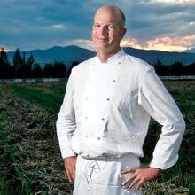

Chef, Owner & Founder
Brad Heap
Brad grew up in Boulder, learning to cook in his mother’s kitchen. He began working in restaurants at 13, graduated from the Culinary Institute of America, and apprenticed in France and Italy. A former partner at Full Moon Grill, he went on to found Colterra Food & Wine and SALT.
His relationships with local growers and producers shape what’s on the menu. His favorite dish at SALT is the Vegetable Tasting.